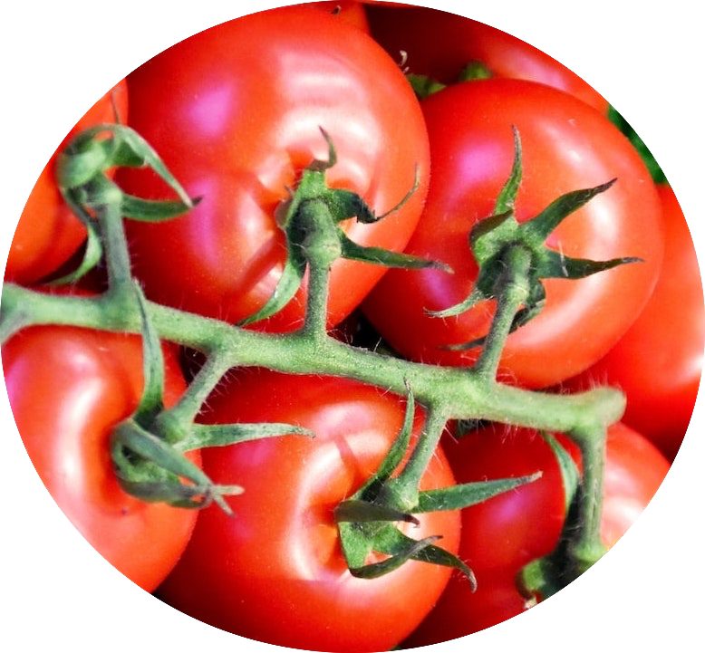
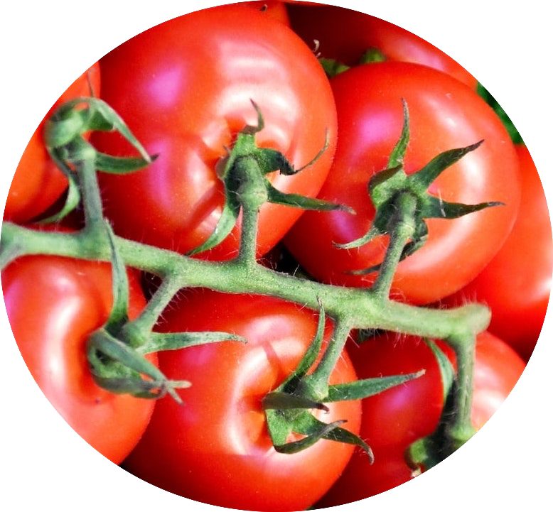
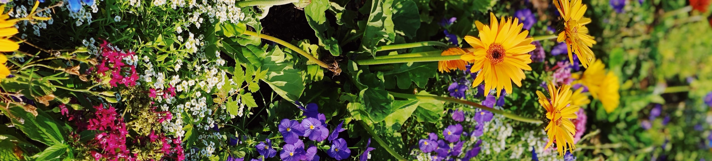
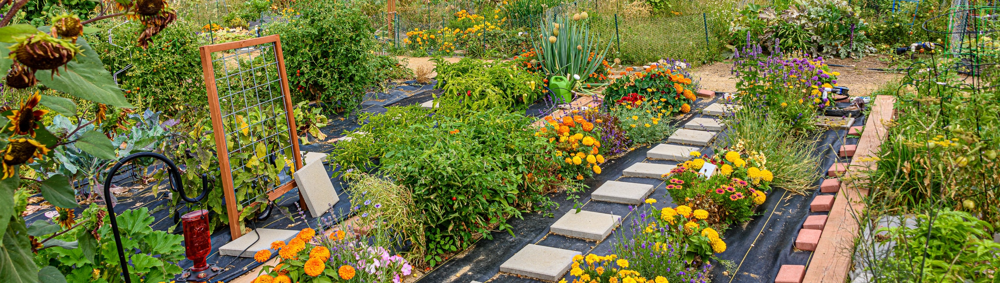

Ecke Garten - The Joy of Community Gardening
Ecke Garten is a Germany based non-profit organisation supporting communities to garden and grow together. We believe that every street corner has the potential to became a small garden.
 

About Ecke Garten
People and communities reaching their full potential through nature-based activities as a part of everyday life. We want to improve the health and wellbeing of individuals, communities and the environment through nature-based activities.
What we do
- Advocate and campaign for greater recognition, funding and opportunities for nature-based activities in urban areas. We encourage people and groups to get involved in their neighbourhood garden.
- Provide expert advice, support growers and offer a free membership scheme to support communities to grow flowers, fruits and vegetables on small plots, in sustainable ways. We are proud to support thousands of grass root organisation, transforming lives and connecting people.
- Design and deliver innovative training programmes which empower and enable communities to thrive and grow. We provide practical support and training Germany wide to thousands of grass roots organisations and groups.
- We promote income generating opportunities for organisations and groups to ensure they can sustain their activities. We promote quality assurance for members to deliver their work with confidence, pride and impact.
Become a Member
Membership is open to any person or group looking into getting involved in an already existing corner garden or whishing to start a new one.
Subscribe to our newsletter, come to our events or visit our available locations.
Benefits of Community Gardening
A community garden can bring a wide range of benefits: from connecting people with each other, to growing fresh food to enjoy. If well-planned, a community garden can offer people a place to relax, a way to engage with nature, meet others and get active outdoors.
Many people assume that community gardens and city farms are just nice places to visit where plants are grown. But many of them also offer an amazing array of benefits and opportunities, which can include education programmes, play schemes, healthy living initiatives, work and skills training, social enterprises, volunteer opportunities, environmental schemes, horticultural therapy groups, facilities for people with disabilities…the list goes on and on!
Our Gardens
We are everywhere! Check out some of our locations:
On site since 2012
Visitors welcomed
On site since 2015
Visitors and Volunteers Welcomed
On site since 2019
Visits possible on request
On site since 2023
New site ! Gardeners Wanted